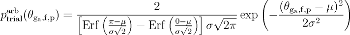
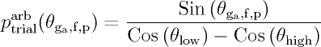

|
|
Overview
This section gives a basic overview of the Configurational-bias Monte Carlo (CBMC) algorithm that is implemented into Towhee and it was last
updated for Towhee version 6.1.1. CBMC algorithm development remains a major research activity, and a particular favorite of the lead Towhee
developer, and the goal of this essay is to explain all of the algorithmic details that often get overlooked in the many publications describing
CBMC algorithm development over the course of the last two decades. It is my hope that by presenting a detailed explanation of the many aspects of
the CBMC algorithm here, the next generation of algorithm developers will be well positioned to increase the power of this method even further.
The general CBMC algorithm
The goal of Monte Carlo Molecular simulation is to generate a sequence of states that occur with a sampling probability proportional to the
configuration integral.
Equation 1 Equation 2 Equation 3 Equation 4 Equation 5 Equation 6 Equation 7
CBMC Trial Generation Form
The most conceptually simple manner for generating trials is to uniformly sample the volume of a sphere of radius max_bond_length centered on
an existing atom that is bonded to the trial atom. However, one could also break the trial generation down into component parts such as bond lengths,
bending angles, dihedral angles, and nonbonded interations and then sample the degrees of freedom related to each of those interactions in a manner that
either decouples the selections by first performing one selection (such as bond length) and then using that value in all later selections
(such as bending angles) or couples the selections by generating several of the steps and selecting them based on their total interactions.
Terms are coupled when the Rosenbluth weight of the first term appears in the acceptance probability of the second. This requires a full selection
procedure of the first term for every trial of the second term. The concepts of coupled-decoupled CBMC were first discussed in
Martin and Siepmann 1999, but these ideas very general and can be used to describe all of the
currently developed CBMC algorithms. The differences in the CBMC algorithm formulations come in the details, and the following section attempts to
some shed light on these details that are often only partially illuminated in the literature.
- Martin and Siepmann JPCB 1999: uses the original coupled-decoupled formulation presented in the appendix of
Martin and Siepmann 1999, with the extension for flexible bond lengths briefly mentioned in
Martin and Thompson 2004. The steps consist of decoupled Bond length selection, decoupled
bending A selection, decoupled bending B selection, and dihedral angle selection coupled to nonbonded selection. The algorithm is decoupled to the
maximum extent possible (it is not possible to decoupled dihedral selection from nonbonded selection) as generating reasonable bond lengths, angles,
and dihedral angles required a relatively large number of trial as this time as the use of arbitrary trial distributions for those terms had not
yet come into fashion.
There is some number of growth steps (nstep) and in each step some number of atoms are generated (ng), where
all of these generated atoms are bonded to the same atom (f). The generated atoms are labelled ga, where the index a ranges from
1 to ng. The first step is to select all of the ga-f bond lengths in a decoupled manner.
-
Equation MS.1
-
Equation MS.2
Where lga,f is the bond length between the generated atom (ga) and the "growing from" atom (f).
For each generated atom, nch_vib trial bond lengths are considered and then one bond length is selected according to the probability
in Equation MS.1. The trial distributions are discussed further in the
Arbitrary Trial Distribution
section. Once bond lengths are selected for all of the generated atoms (ga) the next step is the Part A portion of the decoupled
bending angle selection.
-
Equation MS.3
-
Equation MS.4
The angle θga,f,p is the angle formed by the atom being grown (ga), the atom being grown from (f), and
an atom that is previous to the atom being grown from (p). There are two cases to consider when determining the "previous" atom. Case 1 occurs
when there already exists an atom bonded to the from atom (f) that was either grown in an earlier step of this CBMC growth process, or was not
scheduled for regrowth during this CBMC move. In this case the "p" atom is selected randomly from all possible atoms that exist bonded to the
"f" atom. Case 2 occurs when there are no existing atoms bonded to the "f" atom. In this case one of the atoms grown during this step is selected
at random to be treated as the "p" atom. Once all of the θga,f,p angles are determined, then the
pseudo-dihedral angles between the atoms being grown are sampled.
-
Equation MS.5
-
Equation MS.6
Where φgb,f,p,ga is the pseudo-dihedral angle between the planes formed by the ga-f-p and
gb-f-p atom triplets. The sampling is performed based upon that pseudo-dihedral angle, and then some elementary geometery is
used to convert the φgb,f,p,ga values into the
θga,f,gb angles required to compute the bending angle energies.
One might assume the next step would be selection of the dihedral angle, but once that is known it also implies the positions for the nonbonded
selection step. A single trial of the nonbonded selection is computationally quite expensive compared to a single trial of the dihedral selection
so a selection step for dihedral angles is coupled to the nonbonded selection.
-
Equation MS.7
-
Equation MS.8
-
Equation MS.9
-
Equation MS.10
The above equations are realized by performing a full dihedral selection for each trial of the nonbonded selection. The dihedral angle selection
obviously includes the dihedral energy for the angle being sampled, but also often includes bond, angle, improper and additional dihedral angles
in the case where we are connecting back to some other atoms in the moleule. This occurs when closing a ring, or when performing interior
conformation sampling moves in a molecule. The selection is performed on a single dihedral angle with one of the atoms grown this step
(g1) with the from atom (f), previous atom (p) and a randomly selected atom bonded to p that is not atom f (q). That dihedral angle
implies a large set of dihedral angles that involve the atom being grown and any existing atoms (c, d, or e) that form a dihedral angle
that is now completely described by the addition of the atoms grown this step. It also could imply bond terms that do not involve the
"from" atom, angle terms not centered on the "from" atom, and improper torsions not centered on the "from" atom. The nonbonded selection involves
the Rosenbluth weight of the torsion selection and the sum of the nonbonded terms according to the partial nonbonded terms
(unbpart). The partial nonbonded terms are often set to be shorter ranged than the total nonbonded terms as a time
saving move first described as dual-cutoff in Vlugt et al. 1998. This also often occurs for
charged systems as the long-ranged portion of the Ewald sum is only computed once the entire molecule has been grown, as it is both expensive and a
bit ill-defined to compute during the growth process. The final acceptance probability for the move contains is a more detailed version of the
general Equation 6. The correction for using a partial nonbonded potential is equivalent to removing the bias implied
during the nonbonded selection. That implicit bias is related to the Boltzmann weighted difference between the true nonbonded potential and the
partial nonbonded potential.
-
Equation MS.11
-
Equation MS.12
- Coupled to pre-nonbond: uses the formulation first described in
Martin and Frischknecht 2006, and was enabled by advances in
arbitrary trial distribution functions.
The bond length selection, bending angle A selection, bending angle B selection, and dihedral angle selection are all decoupled from each other, but
coupled in turn to a new selection step that occurs immediately prior to the nonbonded selection. The idea is to better sample the joint distribution
of bond lengths, bending angles, dihedral angles, and improper torsion to improve the acceptance rate in cases where these energies are not
independent, and often in competition with each other.
There is some number of growth steps (nstep) and in each step some number of atoms are generated (ng), where
all of these generated atoms are bonded to the same atom (f). The generated atoms are labelled ga, where the index a ranges from
1 to ng. For each index of the pre-nonbond selection, the bond length, angles, and dihedrals are sequentially generated in a
decoupled manner.
-
Equation CPN.1
-
Equation CPN.2
Where lga,f is the bond length between the generated atom (ga) and the "growing from" atom (f).
For each generated atom, nch_vib trial bond lengths are considered and then one bond length is selected according to the probability
in Equation CPN.1. The trial distributions are discussed further in the
Arbitrary Trial Distribution
section. Once bond lengths are selected for all of the generated atoms (ga) the next step is the Part A portion of the decoupled
bending angle selection.
-
Equation CPN.3
-
Equation CPN.4
The angle θga,f,p is the angle formed by the atom being grown (ga), the atom being grown from (f), and
an atom that is previous to the atom being grown from (p). There are two cases to consider when determining the "previous" atom. Case 1 occurs
when there already exists an atom bonded to the from atom (f) that was either grown in an earlier step of this CBMC growth process, or was not
scheduled for regrowth during this CBMC move. In this case the "p" atom is selected randomly from all possible atoms that exist bonded to the
"f" atom. Case 2 occurs when there are no existing atoms bonded to the "f" atom. In this case one of the atoms grown during this step is selected
at random to be treated as the "p" atom. Once all of the θga,f,p angles are determined, then the
pseudo-dihedral angles between the atoms being grown are sampled.
-
Equation CPN.5
-
Equation CPN.6
Where φgb,f,p,ga is the pseudo-dihedral angle between the planes formed by the ga-f-p and
gb-f-p atom triplets. The sampling is performed based upon that pseudo-dihedral angle, and then some elementary geometery is
used to convert the φgb,f,p,ga values into the
θga,f,gb angles required to compute the bending angle energies.
The next step is a decoupled selection for dihedral angles.
-
Equation CPN.7
-
Equation CPN.8
-
Equation CPN.9
The above equations are realized by performing a full dihedral selection for each trial of the nonbonded selection. The dihedral angle selection
obviously includes the dihedral energy for the angle being sampled, but also often includes bond, angle, improper and additional dihedral angles
in the case where we are connecting back to some other atoms in the moleule. This occurs when closing a ring, or when performing interior
conformation sampling moves in a molecule. The selection is performed on a single dihedral angle with one of the atoms grown this step
(g1) with the from atom (f), previous atom (p) and a randomly selected atom bonded to p that is not atom f (q). That dihedral angle
implies a large set of dihedral angles that involve the atom being grown and any existing atoms (c, d, or e) that form a dihedral angle
that is now completely described by the addition of the atoms grown this step. It also could imply bond terms that do not involve the
"from" atom, angle terms not centered on the "from" atom, and improper torsions not centered on the "from" atom.
The bond, bending angle, and dihedral selections are all coupled to the pre-nonbond selection. The pre-nonbond selection is in turn coupled to the
nonbonded selection.
-
Equation CPN.10
-
Equation CPN.11
-
Equation CPN.12
-
Equation CPN.13
The nonbonded selection involves the Rosenbluth weight of the pre-nonbond selection and the sum of the nonbonded terms according to the partial
nonbonded terms (unbpart). The partial nonbonded terms are often set to be shorter ranged than the total nonbonded
terms as a time saving move first described as dual-cutoff in
Vlugt et al. 1998. This also often occurs for
charged systems as the long-ranged portion of the Ewald sum is only computed once the entire molecule has been grown, as it is both expensive and a
bit ill-defined to compute during the growth process. The final acceptance probability for the move contains is a more detailed version of the
general Equation 6. The correction for using a partial nonbonded potential is equivalent to removing the bias implied
during the nonbonded selection. That implicit bias is related to the Boltzmann weighted difference between the true nonbonded potential and the
partial nonbonded potential.
-
Equation CPN.14
-
Equation CPN.15
Arbitrary Trial Distributions
Arbitrary trial distributions were first used to bias the insertion of the first atom by
Snurr, Bell, and Theodorou 1993. The first use of the method for bond lengths, bending angles, and
dihedral angles occurred in Martin and Biddy 2005, and was later described in detail by
Martin and Frischknecht 2006.
We can best exploit the power of the CBMC algorithm by using arbitrary trial distributions that match Psample(r)
(see Equation 1) as closely as possible. In most cases the distribution of Psample is not known before the
simulation is performed, but the insight that the acceptance rate is maximized when the arbitrary trial distribution used to generate trials
matches the observed distribution for that term, guides our choice of the optimal arbitrary trial distributions.
The arbitrary trial distribution functions used must be nonnegative and properly normalized (integrate to 1) over the appropriate range. In addition,
the arbitrary probability density must be strictly positive for any value where the product of the ideal probability density and the Boltzmann weight
is nonzero.
The following subsections describe the arbitrary trial distributions available in Towhee for various steps of the CBMC growth process
- Insertion of the first atom
The insertion of the first atom in a CBMC insertion move is conceptually quite simple. The proper sampling for the first atom position is a
uniform sampling over the entire box volume.
-
Equation NB_ONE.1
The following arbitrary trial distributions for the first inserted atom trials are implemented into Towhee.
- DIST_UNIFORM: generates trials using the uniform probability distribution. This is used when the nch_nb_one_generation option
is set to 'uniform', or when computing an insertion into the ideal resiviour box (in the Grand Canonical ensemble).
-
Equation NB_ONE.2
- DIST_ENERGY_BIAS: generates trials using a version of the Snurr et al. 1993
energy biasing to preferentially place the first atom in the cavities of a fixed geometric structure, such as a zeolite. This is used when the
nch_nb_one_generation option is set to 'energy bias'
-
Equation NB_ONE.3
Where the box volume is divided into subcells of volume Vcell. Trial positions are selected by first choosing a cell based upon
the weighting factor Xcell, normalized by the total sum of all of the cell weights. Once a cell is selected, then a position is
chosen uniformly within that cell.
- Generation of bond lengths
Despite the apparent simplicity of bond lengths, this is the most confusing distribution to normalize properly. One might assume that the proper
ideal distribution for all of the atoms in the molecule would be the same as the ideal probability distribution of the first atom,
that is to say uniform sampling of the entire simulation box. However, all of the acceptance rules in Towhee come from statistical mechanics that
allows molecules a single set of translational degrees of freedom (one in each dimension). This concept of a molecule requires that the atoms be
in proximity to each other in a manner that maintains this single set of translational degrees of freedom. One way to enforce this concept to
introduce a maximum bond length (max_bond_length or rmax).
The value of the max_bond_length is not important so long as it is larger than the bond length values expected in the simulation.
Starting from an existing atom, the proper sampling for atoms bonded to that atom is the volume of a sphere around the existing atom. For convenience,
we transform the uniform sampling of the sphere from cartesian coordinates to spherical coordinates. This transformation allows the separate
consideration of bond length, bending angle, and dihedral angle.
The ideal distribution for bond lengths is proportional to the distance term in the spherical coordinates
-
Equation BOND.1
so the ideal distribution favors ever longer bond lengths without bound. However, the energetics of a bond potential at some point
become extremely high, and therefore the Boltzmann weight goes to zero at long bond lengths cancelling out the ideal term that increases
as r2. In Towhee, the bond energies are defined to be infinite beyond the max_bond_length distance, and this provides a bound
to the sampling space that we can use to integrate the ideal bond length for use with potentials that allow a continous distribution of bond lengths.
-
Equation BOND.2
where rmax is set via max_bond_length. However, in the case of bond potentials with a finite number of allowed bond lengths the
integral instead becomes a sum over those bond lengths that do not have an infinite energy.
-
Equation BOND.3
where the sum is over all of the bond lengths that do not have an infinite energy. For the most common case of a single allowable bond length,
this ratio becomes 1.
The following arbitrary trial distributions for the bond length trials are implemented into Towhee.
- Generation of bending angles
There are two steps in the generation of bending angles in Towhee. The first step is denoted the "Bending A" selection and it generates bending
angles for the angle formed by an atom being grown (ga), bonded to the atom they are growing from (f), relative to a reference atom that is
also bonded to atom f (p). The second step is denoted the "Bending B" selection and it generates a pseudo-dihedral angle formed by two of the
atoms being grown (ga, gb), the from atom (f) and the previous atom (p). The pseudo-dihedral angle is then used to
compute the relevent bending angles using some elementary geometry.
- Generation of Bending A angles
The "Bending A" ideal distribution contains a phase space term due to the conversion from cartesian to spherical coordinates. For continous
distributions this is easily integrated to get the normalization constant of one half.
-
Equation BEND_A.1
For distributions that have a finite number of non-infinite energy angles (nfinite) the integrated form is replaced by a sum over those
allowed angles.
-
Equation BEND_A.2
The following arbitrary trial distributions for the "Bending A" trials are implemented into Towhee.
- DIST_DELTA: generates trials when there are a finite number of angles (nfinite) that have a nonzero Boltzmann weight.
The most common occurance is a single, rigid bending angle, but this is also functional for multiple allowable rigid bending angles.
-
Equation BEND_A.3
- DIST_SINE: generates trials using the ideal Sine distribution. This is used for non-rigid bending angle potentials when the
cbmc_bend_generation option is set to 'ideal'. Angles are generated on the interval (0, π).
-
Equation BEND_A.4
- DIST_GAUSSIAN: generates trials using the Gaussian distribution. This is used for non-rigid bending angle potentials when the
cbmc_bend_generation option is set to 'global gaussian' or 'autofit gaussian'.
When cbmc_bend_generation is set to 'global gaussian' then the mean (μ) set to the equilibrium bending angle, and the standard deviation
(σ) is set to sdevbena. When cbmc_bend_generation is set to 'autofit gaussian' then the mean (μ) and standard deviation
(σ) are fit to Sin(θ)exp(-β u(θ)) for every angle in each type of molecule in the simulation, and then the standard deviations
are scaled by the bend_a_sdev_multiplier. Angles are generated on the interval (0, π).

Equation BEND_A.5
- DIST_SINE_GAUSSIAN: generates trials using a linear combination of the Sine distribution and the Gaussian distribution.
This is used for non-rigid bending angle potentials when the cbmc_bend_generation option is set to 'ideal + autofit gaussian'.
The mean (μ) and standard deviation (σ) are fit to Sin(θ)exp(-β u(θ)) for every angle in each type of molecule in
the simulation, and then the standard deviations are scaled by the bend_a_sdev_multiplier.
The fraction of ideal moves (fideal) is set to bend_a_ideal_fraction.
Angles are generated on the interval (0, π).
-
Equation BEND_A.6
- DIST_BOUNDED_SINE: generates trials using a Sine distribution bounded above (by θhigh) and
below (by θlow).
This is used automatically in combination with the Infinite Square Well Angle potential
and the bounding angles are determined for each generation based upon the 1-3 distance range allowed by the potential, and the current bond
lengths. Angles are generated on the interval (θlow, θhigh).

Equation BEND_A.7
- Generation of Bending B angles
The "Bending B" pseudo-dihedral angle is the rotation required to bring the positive portion of the ga-f-p plane coincident with
the positive portion of the gb-f-p plane. The ideal distribution for continuous potentials is uniform sampling on the interval (-π, π).
-
Equation BEND_B.1
The distribution for angles with a finite number of non-infinite energy terms (nfinite) is the discrete version of the uniform distribution
-
Equation BEND_B.2
The following arbitrary trial distributions for the "Bending B" trials are implemented into Towhee.
- DIST_DELTA: generates trials when the pseudo-dihedral angle implies any angles that have a potential with a finite number of
angles (nfinite) that have a nonzero Boltzmann weight (i.e. a rigid angle). There are usually 2 viable values of the
pseudo-dihedral angle for each viable implied regular angle (a positive and negative rotation).
-
Equation BEND_B.3
- DIST_UNIFORM: generates trials for non-rigid angles when there are no energy terms to consider for this step, when the
cbmc_bend_generation is set to 'ideal', or when the cbmc_bend_generation is set to 'global gaussian' and a hybridization match is
not found for the "from" atom (f).
-
Equation BEND_B.4
- DIST_GAUSSIAN: generates trials for non-rigid angles when the cbmc_bend_generation is set to 'global gaussian' and a hybridization match
is found for the "from" atom (f), or when the cbmc_bend_generation is set to 'autofit gaussian'. The (-π, π) interval is broken into
some number of subregions (nsub) and each of these subregions is described by a Gaussian distribution.
Each subregion (i) is equally likely (uniform on the number of subregions) and is described by an upper limit (hi(φ)),
a lower limit (lo(φ)), a mean (μ(φ)) and a standard deviation (σ(φ)).
-
Equation BEND_B.5
- DIST_UNIFORM_GAUSSIAN: generates trials using a linear combination of the uniform and Gaussian distributions for non-rigid angles when the
cbmc_bend_generation is set to 'ideal + autofit gaussian'.
The uniform (ideal) distribution is used with a probability equation to the bend_b_ideal_fraction (fideal).
Otherwise the (-π, π) interval is broken into some number of subregions (nsub) and each of these subregions is described
by a Gaussian distribution. In that case, each subregion (i) is equally likely (uniform on the number of subregions) and is described by an
upper limit (hi(φ)), a lower limit (lo(φ)), a mean (μ(φ)) and a standard deviation (σ(φ)).
-
Equation BEND_B.6
- Generation of Dihedral Angles
There are often several dihedral angles across any pair of central atoms. When performing a CBMC move a single dihedral angle is selected from
the available candidates and that dihedral is used as the frame of reference for both the angle and the biasing. The dihedral angle consists of a
sequence of atoms consisting of one of the being grown (ga), the "from" atom (f), the "prev" atom (p), and another atom that is bonded
to "p", but is not "f". The ideal sampling for the dihedral angle is a uniform distribution on the interval (-π, π).
-
Equation DIHED.1
The following arbitrary trial distributions for the dihedral angle trials are implemented into Towhee.
- DIST_DELTA: generates trials when the primary dihedral angle is rigid (or multi-rigid), or when it implies a term that is rigid.
In either case, there are a finite number of dihedral angles (nfinite) that have a nonzero Boltzmann weight for the sum of
the energies involved.
-
Equation DIHED.2
- DIST_UNIFORM: generates trials for non-rigid angles when there are no dihedral energy terms, when the
cbmc_dihedral_generation is set to 'ideal', or when the cbmc_dihedral_generation is set to 'global gaussian' and a hybridization
match is not found for the "from" and "prev" atom pair (f-p).
-
Equation DIHED.3
- DIST_GAUSSIAN: generates trials for non-rigid angles when the cbmc_dihedral_generation is set to 'global gaussian' and a hybridization match
is found for the "from" and "prev" atom pair (f-p), or when the cbmc_dihedral_generation is set to 'autofit gaussian'.
The (-π, π) interval is broken into some number of subregions (nsub) and each of these subregions is described by a
Gaussian distribution. Each subregion (i) is equally likely (uniform on the number of subregions) and is described by an upper limit (hi(φ)),
a lower limit (lo(φ)), a mean (μ(φ)) and a standard deviation (σ(φ)).
-
Equation DIHED.4
- DIST_UNIFORM_GAUSSIAN: generates trials using a linear combination of the uniform and Gaussian distributions for non-rigid dihedral angles when the
cbmc_dihedral_generation is set to 'ideal + autofit gaussian'.
The uniform (ideal) distribution is used with a probability equation to the dihedral_ideal_fraction (fideal).
Otherwise the (-π, π) interval is broken into some number of subregions (nsub) and each of these subregions is described
by a Gaussian distribution. In that case, each subregion (i) is equally likely (uniform on the number of subregions) and is described by an
upper limit (hi(φ)), a lower limit (lo(φ)), a mean (μ(φ)) and a standard deviation (σ(φ)).
-
Equation DIHED.5
Historical context and Testing of various CBMC formulations
Original Efforts
CBMC was developed on lattice by Siepmann 1990 as a method for sampling chain molecules in a
simple model of a monolayer. A variety of researchers (Siepmann and Frenkel 1992,
Frenkel et al. 1992,
Laso et al. 1992, and
Siepmann and McDonald 1992) brought the method to continuous space in 1992. Those versions
of the CBMC algorithm worked well for the linear chain molecules studied in the mid-1990s and were combined with the Gibbs ensemble to compute some
of the first vapor-liquid coexistence curves for chain molecules (such as united-atom n-alkanes). The basic concept is that molecules are
grown atom by atom into a dense fluid in such a way that the local space for each new atom is sampled and the lower energy positions are more likely
to be chosen to continue the growth of the molecule. This accumulates a bias that is then removed in the acceptance rule. The net effect
is a large increase in the acceptance rate for insertions of polyatomic molecules into liquids. The molecules studied as that time had very
simple intramolecular interactions (vibrations, bending angles, dihedrals etc.) and the generation of those terms was handled with a Boltzmann
rejection scheme.
Coupled-Decoupled CBMC 'Martin and Siepmann 1999' formulation
Work on branched alkane adsorption in silicalite by
Vlugt et al. 1999 revealed a flaw in the Boltzmann
rejection technique if a molecule contains any atom that is bonded to three or more other atoms. In addition, this
method became very slow for molecules with atoms bonded to 4 or more other atoms.
One of the methods developed to resolve this problem was the coupled-decoupled CBMC algorithm of
Martin and Siepmann 1999.
The intramolecular terms were now generated using a biasing procedure with appropriate corrections
in the acceptance rule. Bond lengths were still rigid in that paper, although the algorithm was later generalized
to include decoupled flexible bond lengths and class 2 force field term in
Martin and Thompson 2004. The flexible bond angles were decoupled
from the torsions, which were coupled to the nonbonded terms. What this means, is the bond angles are selected based
solely on the bond angle energies and bond angle phase space terms and then those angles are used in all subsequent selections
(torsion and nonbond). Thus, the bond angle selection is decoupled from the other selections. In contrast,
for each nonbond trial a full selection is performed to generate torsional angles so these two selections are coupled.
Arbitrary Trial Distribution CBMC
Traditionally, the trials for things like bond lengths, bending angles, and torsional angles were generated according to
an "ideal" distribution. The "ideal" distribution is the one that occurs when there is no contribution from the potential energy terms.
These trials are then accepted or rejected based upon factors related to the potential energy terms. While this split into "entropic" and
"energetic" terms is convenient, it is not necessarily the best way to handle the trial generation.
Martin and Biddy 2005 used a new method where the bond lengths and
bending angles were generated according to a Gaussian distribution and then corrected for this bias in the acceptance rules.
This change reduced the expense of the CBMC move as fewer trials were required in order to generate viable candidates for bond lengths, bending
angles, and dihedral angles.
Coupled-Decoupled CBMC 'Coupled to pre-nonbond' formulation
The details of this CBMC algorith, along with a substantial review of previous CBMC algorithms, is published in
Martin and Frischknecht 2006. This builds upon the arbitrary trial distribution
method, as that made it possible to achieve high acceptance rates using only a single trial for things like bond lengths and bending
angles, instead of the normal 100 to 1000 required when using the ideal trial distribution method. The main original purpose of
the coupled-decoupled algorithm was to reduce the computational cost of the move by decoupling terms that are relatively stiff and occur early in
the growth step, like vibrations and bending angles. When using the proper arbitrary trial distribution, these steps are considerably less expensive
and that enabled strategies whose primary aim is to improve the acceptance rate for challenging molecular geometries
(such as strongly branched and cyclic molecules). The 'Coupled to pre-nonbond' formulation implemented into Towhee adds a
new selection process in between the dihedral selection and the nonbond selection (a pre-nonbond selection). Bond lengths,
bending angles, and dihedral angles are all decoupled from each other, but coupled to the pre-nonbond selection. When combined with additional
fixed-endpoint biasing functions this allowed for adequate acceptance rates for small, cyclic molecules.
Dual-cutoff CBMC
In 1998 Vlugt et al. 1998 developed a cost-saving version
of the CBMC algorithm. Instead of using the full nonbonded cutoff during the CBMC move, a shorter range cutoff is
used and this makes the computation less expensive in dense systems. The full potential is then computed for the
final structure and the energy difference between the true potential, and the one used to generate the growth trial,
is incorporated into the acceptance rule to remove this bias. In Towhee this algorithm is implemented using the
rcutin variable for the inner cutoff used during the growth and rcut for the cutoff used to computed
the "true" energy of the system. Proper setting of rcutin can decrease the simulation time by a factor of two.
Note that the chemical potential computed using dual-cutoff CBMC has not been proven to be correct, and empirical
evidence suggests that it is not correct in certain cases.
Fixed Endpoint CBMC
Cyclic molecules are substantially more difficult to grow using CBMC because their conformational space is severely
limited by the constraints of having cyclic portions of the molecule. Attempting to grow a cyclic molecule using
standard CBMC methods, and just hoping it closes itself up properly, has an acceptance rate that is nearly zero.
It is generally believed that an additional biasing is required during the growth procedure in order to nudge the
growth into positions that will result in reasonable ring closures. There are a variety of biasing procedures in
the literature. One that is notable, but not currently implemented into Towhee, is the self-adapting fixed-endpoint
(SAFE) CBMC algorithm of Wick and Siepmann 2000.
The problem with SAFE-CBMC is it can use a large amount of memory in order to keep track of all of the adapting
fixed-endpoint biasing functions. The version implemented into Towhee uses some
analytical biasing functions based upon a crude, but consistent, transformation of the distance between growth atoms
and target ring atoms, into a bias function based loosely upon dihedral, bending, and vibrational energies.
Considerable research is still needed in this area to determine optimal biasing strategies. The algorithm implemented
into Towhee was first used, but not satisfactorily described, in
Martin and Thompson 2004. A more detailed description of the biasing functions was
later published in Martin and Frischknecht 2006.
Return to the Towhee algorithm page
|
 Equation MS.8
Equation MS.8 Equation MS.9
Equation MS.9 Equation MS.12
Equation MS.12 Equation CPN.8
Equation CPN.8 Equation CPN.13Equation CPN.14Equation CPN.15
Equation CPN.13Equation CPN.14Equation CPN.15 Equation BEND_B.1
The distribution for angles with a finite number of non-infinite energy terms (nfinite) is the discrete version of the uniform distribution
Equation BEND_B.1
The distribution for angles with a finite number of non-infinite energy terms (nfinite) is the discrete version of the uniform distribution